import pandas as pd
import os
import random
import numpy as np
import matplotlib.pyplot as plt
from great_tables import GT, md
from scipy.signal import detrend
test_file_names = os.listdir("test/")
test_file_names.sort()
test_files = []
#for file in test_file_names:
# test_files.append(pd.read_csv(f"test/{file}", sep=";"))
#NOTE: I'm changing the way the data is imported by preprocessing
# it while being imported. In the official colab, this should be done separately
for file in test_file_names:
data = pd.read_csv(f"test/{file}", sep=";")
data['Value1'] = detrend(data['Value1'])
test_files.append(data)
train_file_names = os.listdir('train/')
train_files = []
for train in train_file_names:
train_files.append(pd.read_csv(f'train/{file}',sep=';'))Preparing data and motivation
The test data is normally distributed meaning normal outlier detection techniques like z scores and IQR is applicable.
The Model
from sklearn.base import BaseEstimator, ClassifierMixin
from sklearn.metrics import recall_score
from sklearn.metrics import mean_squared_error, mean_absolute_error
class StatsModel(BaseEstimator, ClassifierMixin):
"""
Ensemble stats outlier classifier using:
- IQR
- Normal z_scores
- Rolling z_scores
- Mean Absolute Deviation
"""
def __init__(self, w_smooth=51, w = 61,
iqr_threshold = 1.5,
mad_threshold = 2.465,
normal_z_threshold = 2,
rolling_z_threshold = 2,
metric_consensus =3):
self.w = w
self.w_smooth = w_smooth
self.iqr_threshold = iqr_threshold
self.mad_threshold = mad_threshold
self.normal_z_threshold = normal_z_threshold
self.rolling_z_threshold = rolling_z_threshold
self.metric_consensus = metric_consensus
def _determine_rolling_z_mask(self, X :np.array) -> np.array:
k = np.ones(self.w_smooth) / self.w_smooth
smooth = np.convolve(X, k, mode='same')
# I'm quite sure this step makes it less applicable for machine learning so
# its not used in fit
resid = X- smooth
kw = np.ones(self.w) / self.w
mu = np.convolve(resid, kw, mode='same')
mu2 = np.convolve(resid * resid, kw, mode='same')
var = np.maximum(mu2 - mu*mu, 1e-08)
sigma= np.sqrt(var)
z_rolling = np.abs((resid - mu) / (sigma + 1e-08))
return np.abs(z_rolling > self.rolling_z_threshold)
def fit(self, X : np.array, y=None) -> None:
self.iqr_ = np.quantile(X,0.75) - np.quantile(X,0.25)
self.mean_ = np.mean(X)
self.std_ = np.std(X)
self.median_ = np.median(X)
self.mad_ = np.sum(np.abs(X - self.mean_)) / len(X)
self.iqr_ub_ = self.mean_ + self.iqr_threshold * self.iqr_
self.iqr_lb_ = self.mean_ - self.iqr_threshold * self.iqr_
return self
def predict(self, X = None) -> np.array:
IQR_mask = (X > self.iqr_ub_) | (X < self.iqr_lb_)
MAD_mask = np.abs(X - self.median_) > self.mad_ * self.mad_threshold
Normal_Z_Mask = np.abs((X - self.mean_) / self.std_) > self.normal_z_threshold
Rolling_Z_Mask = self._determine_rolling_z_mask(X)
mask_df = pd.DataFrame({
'IQR' : IQR_mask,
"MAD" : MAD_mask,
'Normal_z' : Normal_Z_Mask,
'Rolling_z' : Rolling_Z_Mask
})
mask_df['outlier'] = mask_df.sum(axis=1) >= self.metric_consensus
return mask_df['outlier'].to_numpy()
def score(self, X , y_true) -> float:
y_pred = self.predict(X)
return recall_score(y_true, y_pred)Helper Functions
from benchmarking import Benchmarking
import time
def run_benchmark(model,show_printout=True):
benchmark_df = pd.DataFrame()
file_no = 1
for df in test_files:
if show_printout:
print(f'\n=========================File {file_no}==========================\n')
model = model
X = df['Value1']
y_true = df['Labels']
model.fit(X)
y_pred = model.predict(X)
results = Benchmarking.evaluate_model(y_true, y_pred,show_printout=show_printout)
results = results.rename(columns={'Score' : f'File {file_no}'})
benchmark_df = pd.concat([benchmark_df, results],axis=1)
file_no += 1
return benchmark_df
def create_benchmark_table(benchmark_df: pd.DataFrame,
model_name :str = "Stats Model" ,
subtitle: str = "results **before hyperparameter turning**") -> None:
totals = benchmark_df.sum(axis=1) / 10
totals = totals.apply(lambda x: round(x,2))
totals = totals.to_frame().transpose()
totals['group'] = 'AGGREGATE'
benchmark_df = benchmark_df.transpose()
benchmark_df['group'] = 'File'
benchmark_df = pd.concat([benchmark_df, totals])
benchmark_df = benchmark_df.reset_index().rename(columns={'index': 'File'})
benchmark_df
(
GT(benchmark_df)
.tab_header(title=md(f'Benchmark Results: **{model_name}**'),
subtitle=md(subtitle))
.tab_source_note(md('See benchmarks for how penalised group accuracy is calculated'))
.tab_stub(rowname_col='File',groupname_col='group')
).show()Benchmarking Time complexity
start = time.perf_counter()
ms = []
for epoch in range(1,1000):
start = time.perf_counter()
model = StatsModel()
run_benchmark(model,show_printout=False)
end = time.perf_counter()
ms.append((end-start))
end = time.perf_counter()
print('Time for 1000 epochs', end-start)Time for 1000 epochs 0.1350034629995207plt.plot(ms)
plt.title('Total execution time for 10 Files')
plt.xlabel('Epoch')
plt.ylabel('Execution Time(in seconds)')
plt.show()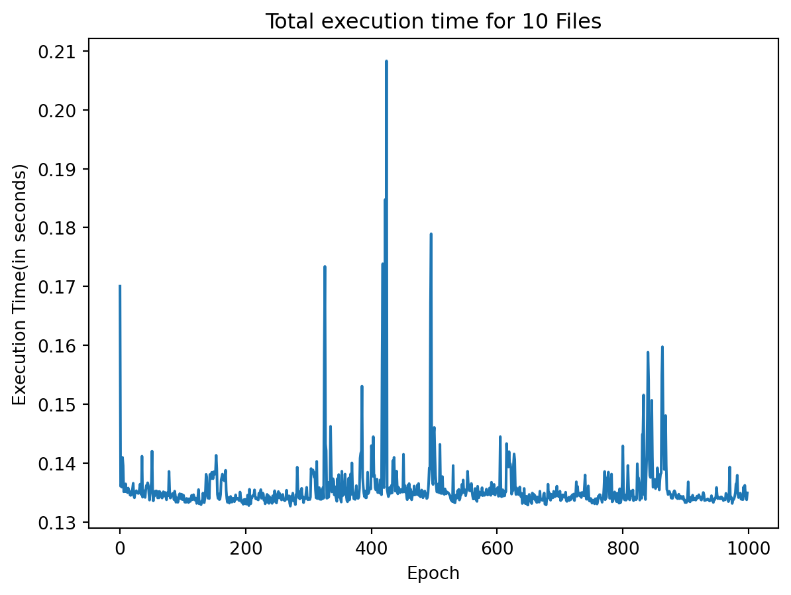
The execution time varies from 24 ms to 300 ms meaning we can tune this model for thousands of iterations to determine the optimal parameters
Base Benchmark
benchmark_df = run_benchmark(StatsModel())
create_benchmark_table(benchmark_df)
=========================File 1==========================
11 anomaly groups identified
10 anomaly groups identified
Model predicts 1 more than 10
Model predicts 1 more than 10
=========================File 2==========================
11 anomaly groups identified
10 anomaly groups identified
Model predicts 1 more than 10
Model predicts 1 more than 10
=========================File 3==========================
12 anomaly groups identified
10 anomaly groups identified
Model predicts 2 more than 10
Model predicts 2 more than 10
=========================File 4==========================
10 anomaly groups identified
10 anomaly groups identified
Number of groups match!
Number of groups match!
=========================File 5==========================
10 anomaly groups identified
10 anomaly groups identified
Number of groups match!
Number of groups match!
=========================File 6==========================
11 anomaly groups identified
10 anomaly groups identified
Model predicts 1 more than 10
Model predicts 1 more than 10
=========================File 7==========================
11 anomaly groups identified
10 anomaly groups identified
Model predicts 1 more than 10
Model predicts 1 more than 10
=========================File 8==========================
11 anomaly groups identified
10 anomaly groups identified
Model predicts 1 more than 10
Model predicts 1 more than 10
=========================File 9==========================
10 anomaly groups identified
10 anomaly groups identified
Number of groups match!
Number of groups match!
=========================File 10==========================
11 anomaly groups identified
10 anomaly groups identified
Model predicts 1 more than 10
Model predicts 1 more than 10| Benchmark Results: Stats Model | ||||||
|---|---|---|---|---|---|---|
| results before hyperparameter turning | ||||||
| Accuracy | Precision | Recall | Balanced Accuracy | Group Accuracy | Penalised Group Accuracy | |
| File | ||||||
| File 1 | 98.63 | 99.87 | 84.75 | 92.37 | 90.0 | 81.82 |
| File 2 | 96.66 | 99.86 | 68.79 | 84.39 | 80.0 | 72.73 |
| File 3 | 96.64 | 99.78 | 57.27 | 78.63 | 70.0 | 58.33 |
| File 4 | 97.84 | 99.83 | 73.26 | 86.62 | 90.0 | 90.0 |
| File 5 | 98.99 | 99.76 | 80.31 | 90.15 | 90.0 | 90.0 |
| File 6 | 97.04 | 99.86 | 70.62 | 85.3 | 90.0 | 81.82 |
| File 7 | 98.18 | 99.68 | 77.81 | 88.89 | 100.0 | 90.91 |
| File 8 | 96.0 | 99.81 | 57.37 | 78.68 | 70.0 | 63.64 |
| File 9 | 96.81 | 99.76 | 56.62 | 78.3 | 80.0 | 80.0 |
| File 10 | 97.57 | 99.87 | 75.99 | 87.99 | 90.0 | 81.82 |
| AGGREGATE | ||||||
| 0 | 97.44 | 99.81 | 70.28 | 85.13 | 85.0 | 79.11 |
| See benchmarks for how penalised group accuracy is calculated | ||||||
Base Benchmark with different grouping hyperparameters
The grouping function used for anomalous regions has two hyperparameters:
- merge_tolerance
- acceptable gap between predicted anomalous regions for when a merge is appropriate
- noise_tolerance
- minimum length of an anomalous region(end - start) for it to be classified as an anomalous region
The group accuracy is penalised if precision or recall is very high. Given each set has a recall of 100%, we can hyperparameter tune the model to maximize recall to get these two metrics closer together.
Given precision is 100% (no false positives) this indicates all true anomalies are deteced by the model. The problem is that there is false negatives in the model indicating multiple false indications of anomalous regions.
Hyperparameter Tuning for Penalised Group Accuracy
from sklearn.model_selection import GridSearchCV, RandomizedSearchCV
from tqdm import tqdm
param_grid = {
"w_smooth": [31, 51, 71, 91, 111, 131, 151, 171],
"w": [41, 61, 81, 101, 121, 141, 161, 181],
"iqr_threshold": [1.5, 1.75, 2],
"mad_threshold": [ 2.2, 2.465, 2.7, 3],
"normal_z_threshold": [2.25, 2.5, 3],
"rolling_z_threshold": [2.0, 2.25, 2.5],
"metric_consensus": [3, 4]
}
combined = pd.concat(test_files)
def calculate_estimated_tuning_time(params: dict, cv :int):
total_iterations = 1
for key, value in params.items():
total_iterations *= len(value)
print(total_iterations)
print('Estimated Tuning Time', (total_iterations / 16)*cv, 'seconds')
calculate_estimated_tuning_time(param_grid,5)
import itertools
import numpy as np
def grid_search(model, X, y, param_grid):
best_score = -np.inf
best_params = {}
for combination in tqdm(itertools.product(*param_grid.values()),desc='Iterations'):
params = dict(zip(param_grid.keys(), combination))
model.set_params(**params)
model.fit(X, y)
score = model.score(X, y)
if score > best_score:
best_score = score
best_params = params
return best_params, best_score13824
Estimated Tuning Time 4320.0 secondsimport os
grid = GridSearchCV(StatsModel(),
param_grid=param_grid,
cv=5,
verbose=1,
n_jobs=-1,
scoring='balanced_accuracy')
#grid.fit(combined['Value1'],combined["Labels"])
#os.system("ffplay ~/Music/notify.mp3") # I use this to know when its done executing#grid.best_params_best_recall_params = {'iqr_threshold': 1.5,
'mad_threshold': 2.2,
'metric_consensus': 3,
'normal_z_threshold': 2.25,
'rolling_z_threshold': 2.0,
'w': 41,
'w_smooth': 31}
best_balanced_acc_params = {'iqr_threshold': 1.5,
'mad_threshold': 3,
'metric_consensus': 3,
'normal_z_threshold': 2.25,
'rolling_z_threshold': 2.0,
'w': 41,
'w_smooth': 31}
best_recall_clf = StatsModel()
best_recall_clf.set_params(**best_recall_params)
benchmark_df = run_benchmark(best_recall_clf)
create_benchmark_table(benchmark_df,model_name='Z_Score Model',
subtitle="results **after hyperparameter tuning for recall**")
=========================File 1==========================
11 anomaly groups identified
10 anomaly groups identified
Model predicts 1 more than 10
Model predicts 1 more than 10
=========================File 2==========================
10 anomaly groups identified
10 anomaly groups identified
Number of groups match!
Number of groups match!
=========================File 3==========================
11 anomaly groups identified
10 anomaly groups identified
Model predicts 1 more than 10
Model predicts 1 more than 10
=========================File 4==========================
10 anomaly groups identified
10 anomaly groups identified
Number of groups match!
Number of groups match!
=========================File 5==========================
11 anomaly groups identified
10 anomaly groups identified
Model predicts 1 more than 10
Model predicts 1 more than 10
=========================File 6==========================
11 anomaly groups identified
10 anomaly groups identified
Model predicts 1 more than 10
Model predicts 1 more than 10
=========================File 7==========================
11 anomaly groups identified
10 anomaly groups identified
Model predicts 1 more than 10
Model predicts 1 more than 10
=========================File 8==========================
10 anomaly groups identified
10 anomaly groups identified
Number of groups match!
Number of groups match!
=========================File 9==========================
10 anomaly groups identified
10 anomaly groups identified
Number of groups match!
Number of groups match!
=========================File 10==========================
11 anomaly groups identified
10 anomaly groups identified
Model predicts 1 more than 10
Model predicts 1 more than 10| Benchmark Results: Z_Score Model | ||||||
|---|---|---|---|---|---|---|
| results after hyperparameter tuning for recall | ||||||
| Accuracy | Precision | Recall | Balanced Accuracy | Group Accuracy | Penalised Group Accuracy | |
| File | ||||||
| File 1 | 98.54 | 99.87 | 83.74 | 91.87 | 90.0 | 81.82 |
| File 2 | 96.49 | 99.72 | 67.29 | 83.63 | 80.0 | 80.0 |
| File 3 | 96.51 | 99.77 | 55.61 | 77.8 | 70.0 | 63.64 |
| File 4 | 97.82 | 99.83 | 73.01 | 86.5 | 90.0 | 90.0 |
| File 5 | 98.9 | 99.5 | 78.74 | 89.36 | 90.0 | 81.82 |
| File 6 | 96.86 | 99.86 | 68.82 | 84.41 | 90.0 | 81.82 |
| File 7 | 98.11 | 99.68 | 76.94 | 88.46 | 100.0 | 90.91 |
| File 8 | 95.82 | 99.62 | 55.56 | 77.77 | 70.0 | 70.0 |
| File 9 | 96.76 | 99.52 | 56.07 | 78.02 | 80.0 | 80.0 |
| File 10 | 97.38 | 99.87 | 74.11 | 87.05 | 90.0 | 81.82 |
| AGGREGATE | ||||||
| 0 | 97.32 | 99.72 | 68.99 | 84.49 | 85.0 | 80.18 |
| See benchmarks for how penalised group accuracy is calculated | ||||||
best_balacc_clf = StatsModel().set_params(**best_balanced_acc_params)
create_benchmark_table(run_benchmark(best_balacc_clf),model_name='Z Score Model',
subtitle="results **after hyperparameter tuning for balanced accuracy**")
=========================File 1==========================
11 anomaly groups identified
10 anomaly groups identified
Model predicts 1 more than 10
Model predicts 1 more than 10
=========================File 2==========================
10 anomaly groups identified
10 anomaly groups identified
Number of groups match!
Number of groups match!
=========================File 3==========================
11 anomaly groups identified
10 anomaly groups identified
Model predicts 1 more than 10
Model predicts 1 more than 10
=========================File 4==========================
10 anomaly groups identified
10 anomaly groups identified
Number of groups match!
Number of groups match!
=========================File 5==========================
11 anomaly groups identified
10 anomaly groups identified
Model predicts 1 more than 10
Model predicts 1 more than 10
=========================File 6==========================
11 anomaly groups identified
10 anomaly groups identified
Model predicts 1 more than 10
Model predicts 1 more than 10
=========================File 7==========================
11 anomaly groups identified
10 anomaly groups identified
Model predicts 1 more than 10
Model predicts 1 more than 10
=========================File 8==========================
10 anomaly groups identified
10 anomaly groups identified
Number of groups match!
Number of groups match!
=========================File 9==========================
10 anomaly groups identified
10 anomaly groups identified
Number of groups match!
Number of groups match!
=========================File 10==========================
11 anomaly groups identified
10 anomaly groups identified
Model predicts 1 more than 10
Model predicts 1 more than 10| Benchmark Results: Z Score Model | ||||||
|---|---|---|---|---|---|---|
| results after hyperparameter tuning for balanced accuracy | ||||||
| Accuracy | Precision | Recall | Balanced Accuracy | Group Accuracy | Penalised Group Accuracy | |
| File | ||||||
| File 1 | 98.55 | 100.0 | 83.74 | 91.87 | 90.0 | 81.82 |
| File 2 | 96.51 | 100.0 | 67.29 | 83.65 | 80.0 | 80.0 |
| File 3 | 96.52 | 100.0 | 55.61 | 77.81 | 70.0 | 63.64 |
| File 4 | 97.83 | 100.0 | 73.01 | 86.5 | 90.0 | 90.0 |
| File 5 | 98.91 | 99.75 | 78.74 | 89.36 | 90.0 | 81.82 |
| File 6 | 96.87 | 100.0 | 68.82 | 84.41 | 90.0 | 81.82 |
| File 7 | 98.12 | 99.84 | 76.94 | 88.47 | 100.0 | 90.91 |
| File 8 | 95.83 | 99.81 | 55.56 | 77.77 | 70.0 | 70.0 |
| File 9 | 96.77 | 99.76 | 56.07 | 78.03 | 80.0 | 80.0 |
| File 10 | 97.39 | 100.0 | 74.11 | 87.05 | 90.0 | 81.82 |
| AGGREGATE | ||||||
| 0 | 97.33 | 99.92 | 68.99 | 84.49 | 85.0 | 80.18 |
| See benchmarks for how penalised group accuracy is calculated | ||||||
model = StatsModel(iqr_threshold=1.5,
normal_z_threshold=3,
rolling_z_threshold=3)
create_benchmark_table(run_benchmark(model))
X = test_files[1]['Value1']
y = test_files[1]['Labels']
model.fit(X)
y_pred = model.predict(X)
pred_groups = np.array(Benchmarking.create_anomaly_groups(pd.Series(y_pred)))
true_groups = np.array(Benchmarking.create_anomaly_groups(y))
print('Pred Groups\n',pred_groups)
print('Actual Groups\n',true_groups)
=========================File 1==========================
5 anomaly groups identified
10 anomaly groups identified
Model predicts 5 less than 10
Model predicts 5 less than 10
=========================File 2==========================
8 anomaly groups identified
10 anomaly groups identified
Model predicts 2 less than 10
Model predicts 2 less than 10
=========================File 3==========================
11 anomaly groups identified
10 anomaly groups identified
Model predicts 1 more than 10
Model predicts 1 more than 10
=========================File 4==========================
9 anomaly groups identified
10 anomaly groups identified
Model predicts 1 less than 10
Model predicts 1 less than 10
=========================File 5==========================
10 anomaly groups identified
10 anomaly groups identified
Number of groups match!
Number of groups match!
=========================File 6==========================
10 anomaly groups identified
10 anomaly groups identified
Number of groups match!
Number of groups match!
=========================File 7==========================
11 anomaly groups identified
10 anomaly groups identified
Model predicts 1 more than 10
Model predicts 1 more than 10
=========================File 8==========================
12 anomaly groups identified
10 anomaly groups identified
Model predicts 2 more than 10
Model predicts 2 more than 10
=========================File 9==========================
12 anomaly groups identified
10 anomaly groups identified
Model predicts 2 more than 10
Model predicts 2 more than 10
=========================File 10==========================
7 anomaly groups identified
10 anomaly groups identified
Model predicts 3 less than 10
Model predicts 3 less than 10| Benchmark Results: Stats Model | ||||||
|---|---|---|---|---|---|---|
| results before hyperparameter turning | ||||||
| Accuracy | Precision | Recall | Balanced Accuracy | Group Accuracy | Penalised Group Accuracy | |
| File | ||||||
| File 1 | 93.48 | 99.59 | 27.02 | 63.5 | 30.0 | 15.0 |
| File 2 | 93.86 | 99.78 | 42.55 | 71.27 | 60.0 | 48.0 |
| File 3 | 96.1 | 99.75 | 50.38 | 75.19 | 70.0 | 63.64 |
| File 4 | 95.96 | 99.75 | 49.88 | 74.93 | 70.0 | 63.0 |
| File 5 | 98.8 | 99.74 | 76.57 | 88.28 | 90.0 | 90.0 |
| File 6 | 93.91 | 99.75 | 39.44 | 69.72 | 70.0 | 70.0 |
| File 7 | 95.87 | 99.5 | 49.32 | 74.65 | 80.0 | 72.73 |
| File 8 | 95.17 | 99.78 | 48.5 | 74.25 | 60.0 | 50.0 |
| File 9 | 96.47 | 99.74 | 51.98 | 75.98 | 80.0 | 66.67 |
| File 10 | 94.71 | 99.79 | 47.62 | 73.8 | 50.0 | 35.0 |
| AGGREGATE | ||||||
| 0 | 95.43 | 99.72 | 48.33 | 74.16 | 66.0 | 57.4 |
| See benchmarks for how penalised group accuracy is calculated | ||||||
8 anomaly groups identified
10 anomaly groups identified
Pred Groups
[[2928 2979]
[3834 3927]
[4758 4879]
[6850 6953]
[7919 7955]
[8379 8429]
[9112 9221]
[9403 9472]]
Actual Groups
[[2206 2326]
[2864 2979]
[3483 3566]
[3834 3927]
[4758 4879]
[6850 6958]
[7852 7955]
[8319 8429]
[9112 9226]
[9372 9472]]for file in test_files:
model = StatsModel().set_params(**best_balanced_acc_params)
X = file['Value1']
y = file['Labels']
model.fit(X)
y_pred = model.predict(X)
pred_groups = Benchmarking.create_anomaly_groups(pd.Series(y))
true_groups = Benchmarking.create_anomaly_groups(y)
plt.figure(figsize=(14,4))
plt.plot(X, color='black',lw=1)
#for start,end in true_groups:
# plt.axvspan(start, end, color='green',alpha=0.3)
for start,end in pred_groups:
plt.axvspan(start,end, color='red',alpha=0.5)
plt.show()10 anomaly groups identified
10 anomaly groups identified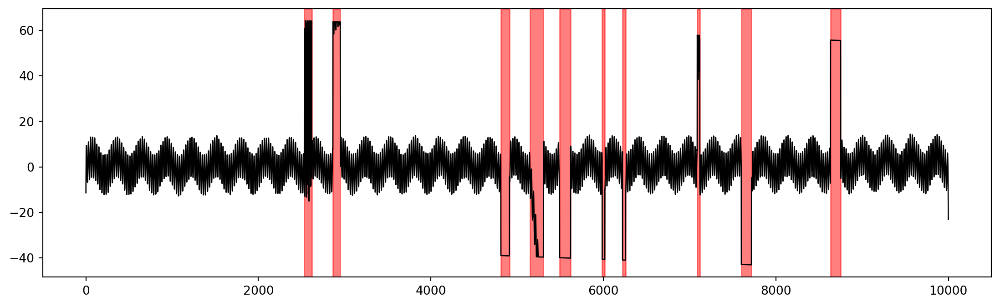
10 anomaly groups identified
10 anomaly groups identified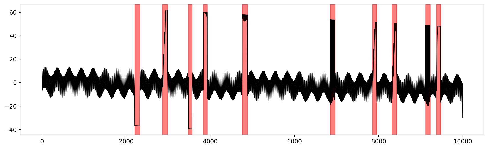
10 anomaly groups identified
10 anomaly groups identified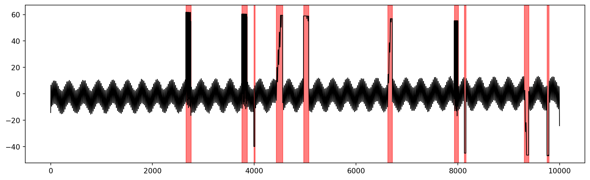
10 anomaly groups identified
10 anomaly groups identified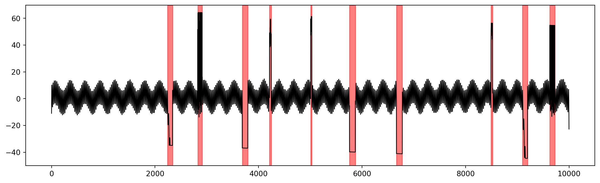
10 anomaly groups identified
10 anomaly groups identified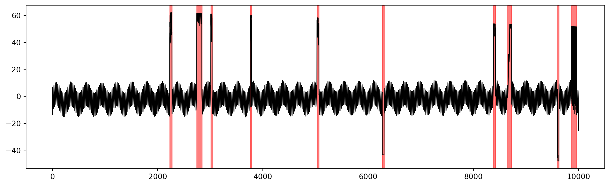
10 anomaly groups identified
10 anomaly groups identified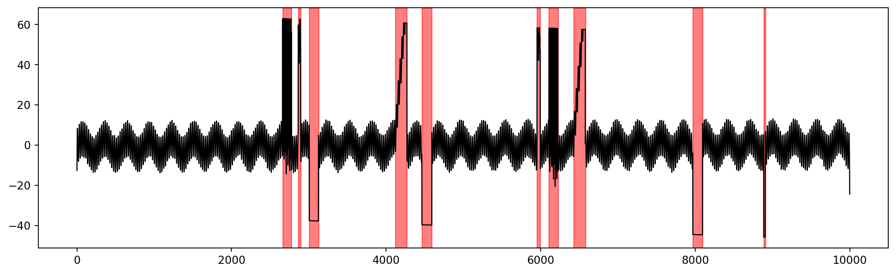
10 anomaly groups identified
10 anomaly groups identified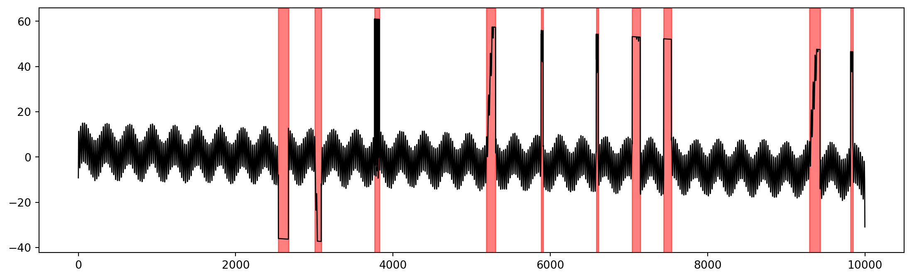
10 anomaly groups identified
10 anomaly groups identified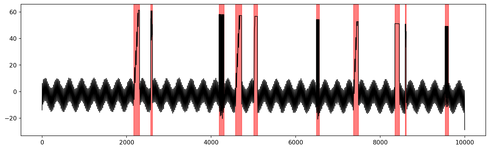
10 anomaly groups identified
10 anomaly groups identified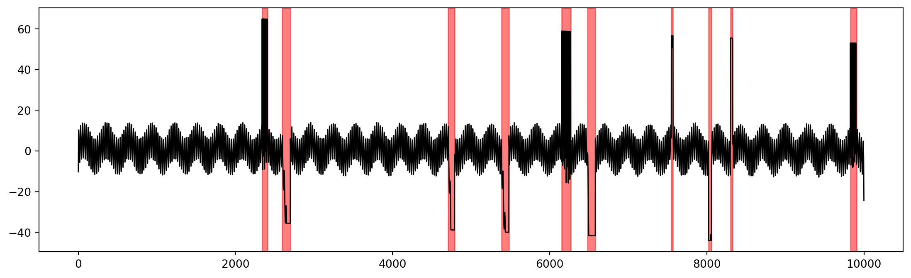
10 anomaly groups identified
10 anomaly groups identified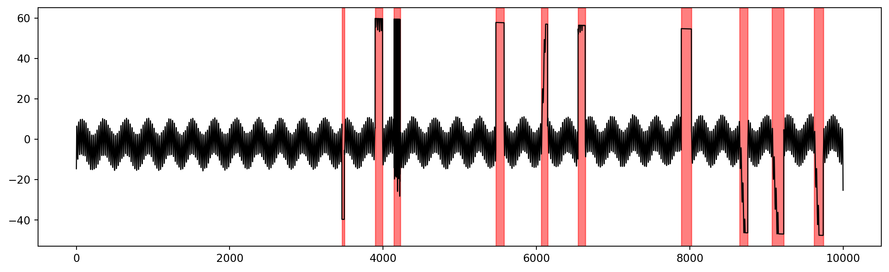
from sklearn.model_selection import LearningCurveDisplay
LearningCurveDisplay.from_estimator(
StatsModel().set_params(**best_balanced_acc_params),
combined['Value1'],
combined['Labels']
)
plt.show()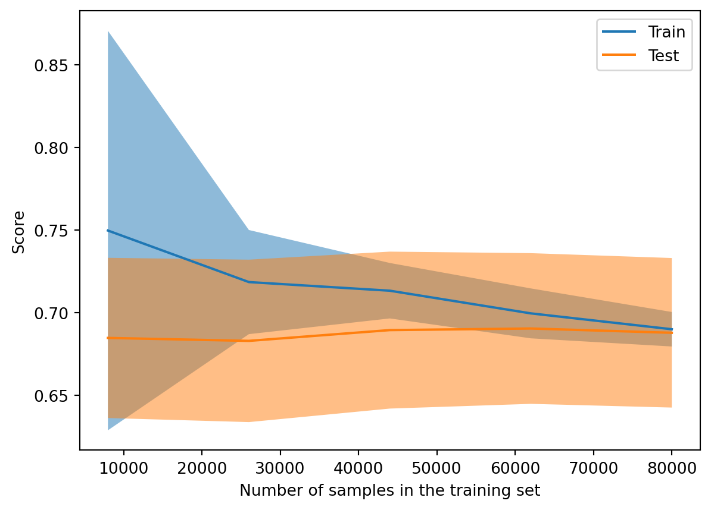
LearningCurveDisplay.from_estimator(
StatsModel().set_params(**best_recall_params),
combined['Value1'],
combined['Labels']
)
plt.show()from sklearn.metrics import roc_curve
from sklearn.metrics import RocCurveDisplay
model = StatsModel().set_params(**best_balanced_acc_params)
Test = combined[-20000:]
model.fit(combined[:80000]['Value1'])
y_pred = model.predict(Test['Value1'])
y_true = Test["Labels"]
fpr, tpr, thresholds = roc_curve(y_true, y_pred)
RocCurveDisplay.from_predictions(y_true, y_pred)
plt.show()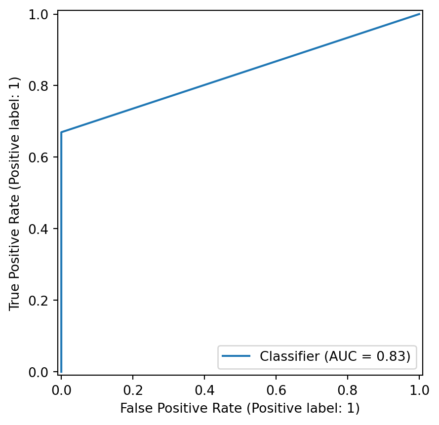
from sklearn.metrics import PrecisionRecallDisplay
PrecisionRecallDisplay.from_predictions(y_true, y_pred)
plt.show()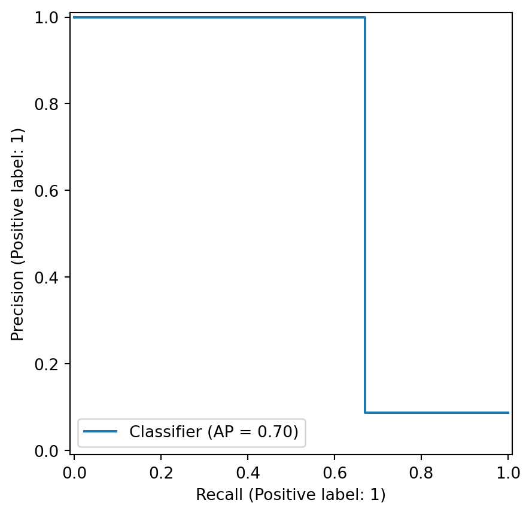
model = StatsModel()
for idx, train in enumerate(train_files):
model = StatsModel()
model.fit(train['Value1'])
y_pred = model.predict(test_files[idx]['Value1'])
y_true= test_files[idx]['Labels']
results = Benchmarking.evaluate_model(y_true, y_pred)
print(results)2 anomaly groups identified
10 anomaly groups identified
Model predicts 8 less than 10
Model predicts 8 less than 10
Score
Accuracy 8.78
Precision 8.79
Recall 98.43
Balanced Accuracy 49.22
Group Accuracy 0.00
Penalised Group Accuracy 0.00
6 anomaly groups identified
10 anomaly groups identified
Model predicts 4 less than 10
Model predicts 4 less than 10
Score
Accuracy 8.13
Precision 8.34
Recall 76.19
Balanced Accuracy 38.10
Group Accuracy 0.00
Penalised Group Accuracy 0.00
4 anomaly groups identified
10 anomaly groups identified
Model predicts 6 less than 10
Model predicts 6 less than 10
Score
Accuracy 6.98
Precision 7.04
Recall 89.03
Balanced Accuracy 44.52
Group Accuracy 0.00
Penalised Group Accuracy 0.00
4 anomaly groups identified
10 anomaly groups identified
Model predicts 6 less than 10
Model predicts 6 less than 10
Score
Accuracy 7.71
Precision 7.74
Recall 95.90
Balanced Accuracy 47.95
Group Accuracy 0.00
Penalised Group Accuracy 0.00
7 anomaly groups identified
10 anomaly groups identified
Model predicts 3 less than 10
Model predicts 3 less than 10
Score
Accuracy 4.03
Precision 4.07
Recall 79.33
Balanced Accuracy 39.67
Group Accuracy 0.00
Penalised Group Accuracy 0.00
8 anomaly groups identified
10 anomaly groups identified
Model predicts 2 less than 10
Model predicts 2 less than 10
Score
Accuracy 8.34
Precision 8.48
Recall 83.07
Balanced Accuracy 41.53
Group Accuracy 0.00
Penalised Group Accuracy 0.00
7 anomaly groups identified
10 anomaly groups identified
Model predicts 3 less than 10
Model predicts 3 less than 10
Score
Accuracy 6.09
Precision 6.22
Recall 75.09
Balanced Accuracy 37.55
Group Accuracy 0.00
Penalised Group Accuracy 0.00
9 anomaly groups identified
10 anomaly groups identified
Model predicts 1 less than 10
Model predicts 1 less than 10
Score
Accuracy 7.26
Precision 7.42
Recall 77.56
Balanced Accuracy 38.78
Group Accuracy 0.00
Penalised Group Accuracy 0.00
1 anomaly groups identified
10 anomaly groups identified
Model predicts 9 less than 10
Model predicts 9 less than 10
Score
Accuracy 7.32
Precision 7.32
Recall 99.86
Balanced Accuracy 49.93
Group Accuracy 0.00
Penalised Group Accuracy 0.00
2 anomaly groups identified
10 anomaly groups identified
Model predicts 8 less than 10
Model predicts 8 less than 10
Score
Accuracy 9.63
Precision 9.67
Recall 95.54
Balanced Accuracy 47.77
Group Accuracy 0.00
Penalised Group Accuracy 0.00